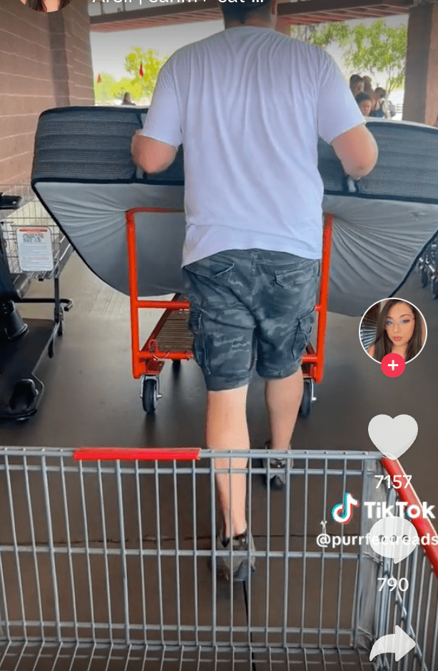
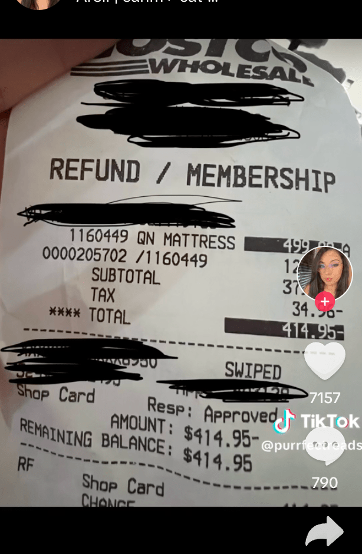
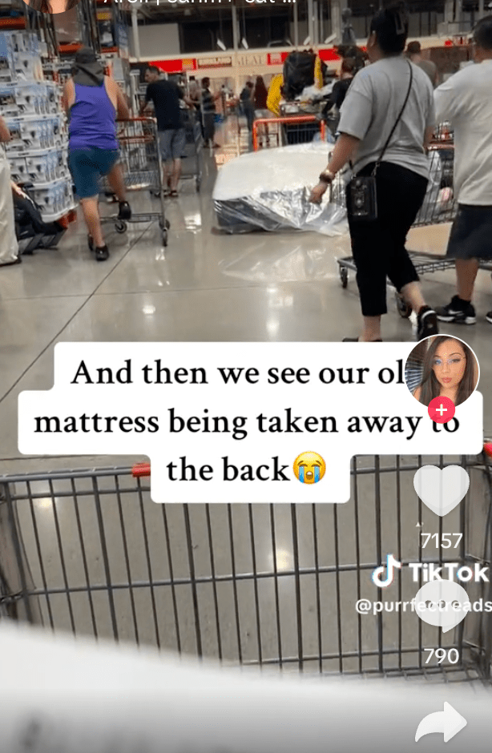

一张已经睡了五年的床垫，竟然能够退货，全额奉还？美国一对夫妻最近就尝试挑战这个「不可能的任务」，在好市多（Costco）成功获退还款额，而且理据只是简单一句「睡得不舒服」，二人把过程拍下放上社交平台，马上引发两派论战，有人表明不屑其所为，有人则扬言会模仿。《福斯新闻》报导，TikTok用户「@purrfectreads」日前分享了这段退货「神奇」经历，引来众人啧啧称奇。在影片中，夫妇二人表示，想测试一下，货物在好市多出门多年后仍可退货的「都市传说」是否真实，而且还要在没有收据的情况下要求退款。



夫妇二人把一张双人加大床垫绑在车顶，出发到好市多，尽管夫妻俩没有提供当年的购买收据，但会员卡能够追溯、找回原始订单。因此，好市多最终收回了床垫，还把退费汇入一张价值499.99美元（约新台币1.6万）的礼物卡。他们收到后，立刻用这笔退费补上价差，又买了一张全新的特大号双人床。
许多网友批评，夫妻俩的做法相当不妥当，「退回一个5年前的臭床垫，有什么好骄傲的？」、「试躺几周可以，但5年？」、「就是有人爱做这种烂事，然后当商店开始打击或改变规则时，他们也是第一个抱怨的人。」
「@purrfectreads」事后澄清，他们当年购买的床垫品牌，本来就有提供10年保固。也有不少人看完影片后，似乎受到鼓舞，留言宣称也要去好市多退货。
《美国新闻与世界报导》2023年将好市多列为退货政策最好的6大企业之一。零售顾问兼谘询公司Romy Group总经理高斯林（Nick Gausling）说，「在大型零售商中，好市多的（退货）政策是最慷慨的，甚至允许在多年后退货。他们的会员制度抵销了处理退货的损失，并且促进分店与消费者之间的良好关系，这对于每个人而言都是胜利局面。」